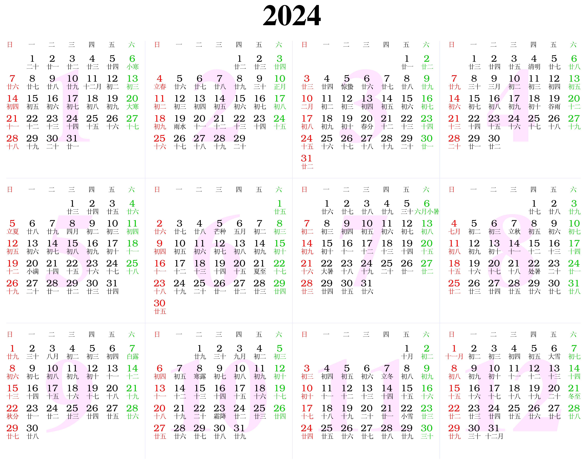

2024
A glance

Calendrical links
- Chinese Calendar Online: 2024 Chinese Calendar, 24 Solar terms, Auspicious direction, Zodiac
- Other sites on 24 Solar terms: China Education Tours. China Highlights
Vice Chancellor's annual address
YouTube, https://www.youtube.com/watch?v=eP-PNRzOgC4
Events
- Fastival of Genomics & Biodata, 24-25 January 2024, ExCeL, London, Web: https://tinyurl.com/43tyteb8 (Agenda, https://tinyurl.com/3y52zcns)
- ESHG, 1-4 June, Berlin, Germany (deadline for abstract submission, Thursday, 1 February, 2024, 23.59 hrs) https://2024.eshg.org/
- EMGM, 3-4 April, Klosterneuburg, Austria (deadline for abstract submission, 15 March 2024), Web: https://emgm2024.ista.ac.at/
- RSS, 2-5 September, Brighton, UK, Web: https://rss.org.uk/training-events/events/events-2024/rss-2024-international-conference-(1)/.
- Cambridge Proteomics and Mass Spectrometry Meeting, Thu, 17 Oct 2024 12:00 - 17:30 BST, Babraham Research Campus, https://www.babraham.com/ (map), CambridgeProtMS@gmail.com. Sponsors:
- Thermo Fisher Scientific, https://www.thermofisher.com/uk/en/home.html
- Evosep, https://www.evosep.com/
- MS WiL, https://www.mswil.com/
- ATG Scientific, https://atgscientific.co.uk/
- British Society for Proteome Research (BSPR), https://www.bspr.org/
- Babraham Institute, https://www.babraham.ac.uk/
- Babraham Research Campus, https://www.babraham.com/
Funding calls
- 18/9 BST 17:00, Accelerate-C2D3 Funding Call
- 13/9 BST 12:00, Artificial Intelligence in Cardiovascular and Respiratory Disease Diagnostics